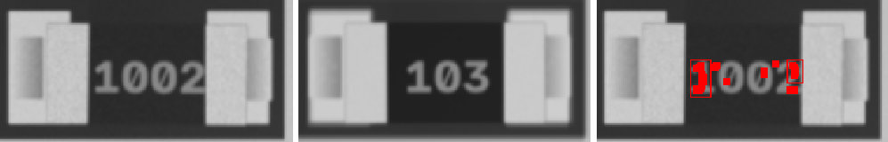
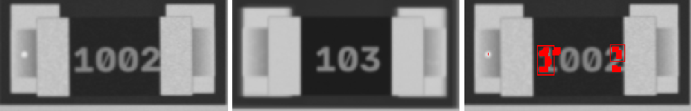
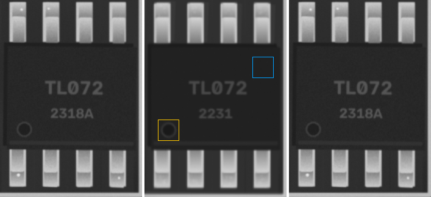

4u7 · 0402
ANOMALY

ncc 0.882 · ncc_thr 0.6 · mad 6.1 · mad_thr 10.2 · dx_mm 0.047 · dy_mm 0.07 · dtheta_deg 2.0 · anomaly_px 0
4u7 · L_4x4
ANOMALY

ncc 0.963 · ncc_thr 0.6 · mad 1.6 · mad_thr 7.1 · dx_mm -0.07 · dy_mm -0.023 · dtheta_deg -0.0 · anomaly_px 0
10k · 1206
ANOMALY

ncc 0.951 · ncc_thr 0.6 · mad 4.9 · mad_thr 8.9 · dx_mm 0.047 · dy_mm -0.023 · dtheta_deg -0.0 · anomaly_px 226
10k · 1206
ANOMALY

ncc 0.946 · ncc_thr 0.6 · mad 4.7 · mad_thr 8.8 · dx_mm 0.0 · dy_mm 0.07 · dtheta_deg -0.0 · anomaly_px 216
TL072 · SOIC-8
ANOMALY

ncc 0.927 · ncc_thr 0.6 · mad 1.0 · mad_thr 7.2 · mark_ncc {'0': 0.951, '180': 0.161} · dx_mm 0.0 · dy_mm 0.047 · dtheta_deg -0.0 · anomaly_px 0
100u · CP_Elec_5x5.8
ncc 0.999 · ncc_thr 0.6 · mad 1.7 · mad_thr 8.6 · mark_ncc {'0': 0.997, '180': 0.097} · dx_mm -0.023 · dy_mm 0.0 · dtheta_deg -0.0 · anomaly_px 0
22p · 0805
ncc 0.971 · ncc_thr 0.6 · mad 5.2 · mad_thr 8.4 · dx_mm 0.07 · dy_mm -0.023 · dtheta_deg -0.0 · anomaly_px 0
22p · 0402
ncc 0.945 · ncc_thr 0.6 · mad 8.9 · mad_thr 12.9 · dx_mm 0.047 · dy_mm 0.0 · dtheta_deg -0.0 · anomaly_px 0
4u7 · 0402
ncc 0.956 · ncc_thr 0.6 · mad 5.9 · mad_thr 9.4 · dx_mm 0.047 · dy_mm 0.0 · dtheta_deg -0.0 · anomaly_px 0
100n · 1206
ncc 0.951 · ncc_thr 0.6 · mad 3.9 · mad_thr 8.0 · dx_mm 0.093 · dy_mm 0.047 · dtheta_deg -0.0 · anomaly_px 0
100n · 0603
ncc 0.978 · ncc_thr 0.6 · mad 6.8 · mad_thr 9.3 · dx_mm 0.0 · dy_mm 0.023 · dtheta_deg -0.0 · anomaly_px 0
10u · 0805
ncc 0.963 · ncc_thr 0.6 · mad 4.8 · mad_thr 8.3 · dx_mm 0.023 · dy_mm 0.047 · dtheta_deg -0.0 · anomaly_px 0
4u7 · 0603
ncc 0.97 · ncc_thr 0.6 · mad 5.5 · mad_thr 9.4 · dx_mm -0.023 · dy_mm 0.0 · dtheta_deg -0.0 · anomaly_px 0
10u · 0603
ncc 0.959 · ncc_thr 0.6 · mad 6.1 · mad_thr 10.7 · dx_mm 0.047 · dy_mm 0.023 · dtheta_deg -0.0 · anomaly_px 0
100n · 0402
ncc 0.953 · ncc_thr 0.6 · mad 7.6 · mad_thr 12.8 · dx_mm 0.023 · dy_mm 0.0 · dtheta_deg -0.0 · anomaly_px 0
1u · 0402
ncc 0.977 · ncc_thr 0.6 · mad 6.3 · mad_thr 10.6 · dx_mm 0.023 · dy_mm 0.0 · dtheta_deg -0.0 · anomaly_px 0
Tantalum_Case-A · Tantalum_Case-A
ncc 0.986 · ncc_thr 0.6 · mad 2.5 · mad_thr 8.4 · mark_ncc {'0': 0.996, '180': 0.971} · dx_mm 0.0 · dy_mm 0.023 · dtheta_deg -0.0 · anomaly_px 0
22p · 0402
ncc 0.87 · ncc_thr 0.6 · mad 9.5 · mad_thr 11.4 · dx_mm 0.0 · dy_mm 0.023 · dtheta_deg -0.0 · anomaly_px 0
22p · 0603
ncc 0.945 · ncc_thr 0.6 · mad 5.7 · mad_thr 8.7 · dx_mm -0.07 · dy_mm 0.0 · dtheta_deg -0.0 · anomaly_px 0
4u7 · 0603
ncc 0.976 · ncc_thr 0.6 · mad 5.5 · mad_thr 9.6 · dx_mm 0.023 · dy_mm 0.0 · dtheta_deg -0.0 · anomaly_px 0
10u · 0603
ncc 0.954 · ncc_thr 0.6 · mad 8.1 · mad_thr 9.9 · dx_mm 0.047 · dy_mm 0.0 · dtheta_deg -0.0 · anomaly_px 0
1u · 0805
ncc 0.978 · ncc_thr 0.6 · mad 5.5 · mad_thr 8.3 · dx_mm 0.0 · dy_mm 0.0 · dtheta_deg -0.0 · anomaly_px 0
4u7 · 0805
ncc 0.966 · ncc_thr 0.6 · mad 5.0 · mad_thr 8.3 · dx_mm -0.047 · dy_mm 0.0 · dtheta_deg -2.0 · anomaly_px 0
10u · 1206
ncc 0.974 · ncc_thr 0.6 · mad 4.2 · mad_thr 8.3 · dx_mm 0.023 · dy_mm 0.0 · dtheta_deg -0.0 · anomaly_px 0
4u7 · 1206
ncc 0.956 · ncc_thr 0.6 · mad 4.5 · mad_thr 8.4 · dx_mm 0.023 · dy_mm -0.023 · dtheta_deg -0.0 · anomaly_px 0
4u7 · 1206
ncc 0.971 · ncc_thr 0.6 · mad 4.3 · mad_thr 8.6 · dx_mm 0.023 · dy_mm -0.023 · dtheta_deg -0.0 · anomaly_px 0
SOD-123 · SOD-123
ncc 0.992 · ncc_thr 0.6 · mad 0.8 · mad_thr 7.0 · mark_ncc {'0': 0.995, '180': 0.118} · dx_mm -0.023 · dy_mm 0.047 · dtheta_deg -0.0 · anomaly_px 0
SOD-123 · SOD-123
ncc 0.974 · ncc_thr 0.6 · mad 1.4 · mad_thr 7.0 · mark_ncc {'0': 0.922, '180': 0.091} · dx_mm -0.023 · dy_mm 0.0 · dtheta_deg -0.0 · anomaly_px 0
LED_0805 · LED_0805
ncc 0.976 · ncc_thr 0.6 · ncc_180 0.768 · mad 4.8 · mad_thr 9.6 · mark_ncc {'0': 0.0, '180': 0.0} · dx_mm 0.047 · dy_mm -0.07 · dtheta_deg -0.0 · anomaly_px 0
LED_0805 · LED_0805
ncc 0.97 · ncc_thr 0.6 · ncc_180 0.784 · mad 7.3 · mad_thr 9.3 · mark_ncc {'0': 0.0, '180': 0.0} · dx_mm 0.0 · dy_mm -0.047 · dtheta_deg -0.0 · anomaly_px 0
LED_0805 · LED_0805
ncc 0.988 · ncc_thr 0.6 · ncc_180 0.788 · mad 5.2 · mad_thr 9.3 · mark_ncc {'0': 0.0, '180': 0.0} · dx_mm -0.023 · dy_mm 0.023 · dtheta_deg -0.0 · anomaly_px 0
LED_0805 · LED_0805
ncc 0.982 · ncc_thr 0.6 · ncc_180 0.799 · mad 5.4 · mad_thr 8.2 · mark_ncc {'0': 0.0, '180': 0.0} · dx_mm 0.047 · dy_mm 0.047 · dtheta_deg -0.0 · anomaly_px 0
LED_0805 · LED_0805
ncc 0.983 · ncc_thr 0.6 · ncc_180 0.784 · mad 5.5 · mad_thr 8.3 · mark_ncc {'0': 0.0, '180': 0.0} · dx_mm -0.047 · dy_mm 0.047 · dtheta_deg -0.0 · anomaly_px 0
LED_0805 · LED_0805
ncc 0.988 · ncc_thr 0.6 · ncc_180 0.781 · mad 5.1 · mad_thr 8.2 · mark_ncc {'0': 0.0, '180': 0.0} · dx_mm 0.023 · dy_mm 0.0 · dtheta_deg -0.0 · anomaly_px 0
4u7 · L_4x4
ncc 0.986 · ncc_thr 0.6 · mad 5.6 · mad_thr 9.2 · dx_mm 0.023 · dy_mm 0.023 · dtheta_deg -0.0 · anomaly_px 0
J3Y · SOT-23
ncc 0.973 · ncc_thr 0.6 · ncc_180 0.534 · mad 1.4 · mad_thr 7.2 · mad_180 6.9 · dx_mm 0.0 · dy_mm 0.07 · dtheta_deg -0.0 · anomaly_px 0
A7 · SOT-23
ncc 0.94 · ncc_thr 0.6 · ncc_180 0.457 · mad 1.4 · mad_thr 7.3 · mad_180 8.7 · dx_mm -0.047 · dy_mm -0.047 · dtheta_deg -0.0 · anomaly_px 0
A7 · SOT-23
ncc 0.98 · ncc_thr 0.6 · ncc_180 0.38 · mad 1.1 · mad_thr 7.1 · mad_180 14.8 · dx_mm 0.0 · dy_mm -0.023 · dtheta_deg -0.0 · anomaly_px 0
S4 · SOT-23
ncc 0.982 · ncc_thr 0.6 · ncc_180 0.676 · mad 1.3 · mad_thr 7.2 · mad_180 3.8 · dx_mm 0.0 · dy_mm 0.0 · dtheta_deg -0.0 · anomaly_px 0
W1 · SOT-23
ncc 0.986 · ncc_thr 0.6 · ncc_180 0.325 · mad 1.0 · mad_thr 7.1 · mad_180 26.9 · dx_mm 0.0 · dy_mm -0.023 · dtheta_deg -0.0 · anomaly_px 0
J3Y · SOT-23
ncc 0.979 · ncc_thr 0.6 · ncc_180 0.376 · mad 1.2 · mad_thr 7.1 · mad_180 3.8 · dx_mm 0.0 · dy_mm -0.023 · dtheta_deg -0.0 · anomaly_px 0
W1 · SOT-23
ncc 0.977 · ncc_thr 0.6 · ncc_180 0.315 · mad 1.0 · mad_thr 7.0 · mad_180 9.7 · dx_mm 0.0 · dy_mm 0.023 · dtheta_deg -0.0 · anomaly_px 0
J3Y · SOT-23
ncc 0.956 · ncc_thr 0.6 · ncc_180 0.357 · mad 1.1 · mad_thr 7.0 · mad_180 2.7 · dx_mm 0.0 · dy_mm -0.093 · dtheta_deg -0.0 · anomaly_px 0
J3Y · SOT-23
ncc 0.978 · ncc_thr 0.6 · ncc_180 0.272 · mad 0.9 · mad_thr 7.0 · mad_180 26.4 · dx_mm 0.0 · dy_mm 0.023 · dtheta_deg -0.0 · anomaly_px 0
10k · 0402
ncc 0.984 · ncc_thr 0.6 · mad 9.4 · mad_thr 19.3 · dx_mm -0.047 · dy_mm 0.0 · dtheta_deg -0.0 · anomaly_px 0
1k · 0603
ncc 0.972 · ncc_thr 0.6 · mad 5.1 · mad_thr 10.2 · dx_mm 0.0 · dy_mm -0.023 · dtheta_deg -0.0 · anomaly_px 0
220 · 0402
ncc 0.988 · ncc_thr 0.6 · mad 10.7 · mad_thr 15.2 · dx_mm -0.023 · dy_mm 0.0 · dtheta_deg -0.0 · anomaly_px 0
10k · 0603
ncc 0.973 · ncc_thr 0.6 · mad 6.9 · mad_thr 10.4 · dx_mm 0.047 · dy_mm 0.0 · dtheta_deg -0.0 · anomaly_px 0
0R · 0805
ncc 0.958 · ncc_thr 0.6 · mad 5.9 · mad_thr 9.3 · dx_mm -0.023 · dy_mm 0.023 · dtheta_deg -0.0 · anomaly_px 0
4k7 · 0603
ncc 0.968 · ncc_thr 0.6 · mad 8.2 · mad_thr 10.2 · dx_mm 0.0 · dy_mm 0.0 · dtheta_deg -0.0 · anomaly_px 0
4k7 · 0402
ncc 0.989 · ncc_thr 0.6 · mad 3.8 · mad_thr 16.1 · dx_mm -0.047 · dy_mm 0.0 · dtheta_deg -0.0 · anomaly_px 0
4k7 · 0805
ncc 0.939 · ncc_thr 0.6 · mad 6.2 · mad_thr 9.4 · dx_mm -0.093 · dy_mm 0.023 · dtheta_deg -0.0 · anomaly_px 0
220 · 0805
ncc 0.949 · ncc_thr 0.6 · mad 5.6 · mad_thr 9.3 · dx_mm 0.047 · dy_mm 0.047 · dtheta_deg -0.0 · anomaly_px 0
220 · 0603
ncc 0.973 · ncc_thr 0.6 · mad 5.8 · mad_thr 10.6 · dx_mm -0.023 · dy_mm 0.0 · dtheta_deg -0.0 · anomaly_px 0
1k · 0805
ncc 0.952 · ncc_thr 0.6 · mad 8.0 · mad_thr 9.7 · dx_mm -0.023 · dy_mm 0.0 · dtheta_deg -0.0 · anomaly_px 0
1k · 0603
ncc 0.97 · ncc_thr 0.6 · mad 7.1 · mad_thr 13.0 · dx_mm 0.023 · dy_mm 0.0 · dtheta_deg -0.0 · anomaly_px 0
100k · 0805
ncc 0.953 · ncc_thr 0.6 · mad 7.2 · mad_thr 9.3 · dx_mm -0.023 · dy_mm 0.0 · dtheta_deg -0.0 · anomaly_px 0
220 · 0603
ncc 0.967 · ncc_thr 0.6 · mad 7.5 · mad_thr 10.2 · dx_mm 0.023 · dy_mm 0.0 · dtheta_deg -0.0 · anomaly_px 0
10k · 0805
ncc 0.946 · ncc_thr 0.6 · mad 7.8 · mad_thr 9.5 · dx_mm -0.047 · dy_mm 0.023 · dtheta_deg -2.0 · anomaly_px 0
1k · 0402
ncc 0.987 · ncc_thr 0.6 · mad 8.7 · mad_thr 18.4 · dx_mm -0.023 · dy_mm 0.0 · dtheta_deg -0.0 · anomaly_px 0
4k7 · 0402
ncc 0.982 · ncc_thr 0.6 · mad 6.2 · mad_thr 14.9 · dx_mm 0.023 · dy_mm 0.047 · dtheta_deg -0.0 · anomaly_px 0
0R · 0805
ncc 0.957 · ncc_thr 0.6 · mad 4.7 · mad_thr 9.3 · dx_mm 0.023 · dy_mm 0.0 · dtheta_deg -0.0 · anomaly_px 0
GD32F303 · LQFP-48
ncc 0.886 · ncc_thr 0.6 · mad 1.8 · mad_thr 7.8 · mark_ncc {'0': 0.957, '90': 0.217, '180': 0.145, '270': 0.176} · dx_mm 0.047 · dy_mm 0.07 · dtheta_deg -0.0 · anomaly_px 0
24C02 · SOIC-8
ncc 0.964 · ncc_thr 0.6 · mad 1.5 · mad_thr 7.5 · mark_ncc {'0': 0.953, '180': 0.104} · dx_mm -0.023 · dy_mm -0.023 · dtheta_deg -0.0 · anomaly_px 0
ESP32-C3 · QFN-32
ncc 0.955 · ncc_thr 0.6 · mad 1.5 · mad_thr 7.4 · mark_ncc {'0': 0.988, '90': 0.413, '180': 0.134, '270': 0.246} · dx_mm -0.023 · dy_mm -0.047 · dtheta_deg -0.0 · anomaly_px 0
STM32F030 · TSSOP-20
ncc 0.938 · ncc_thr 0.6 · mad 1.6 · mad_thr 7.6 · mark_ncc {'0': 0.961, '180': 0.182} · dx_mm 0.0 · dy_mm -0.047 · dtheta_deg -0.0 · anomaly_px 0
STM32F030 · TSSOP-20
ncc 0.91 · ncc_thr 0.6 · mad 1.5 · mad_thr 7.3 · mark_ncc {'0': 0.944, '180': 0.278} · dx_mm 0.0 · dy_mm -0.047 · dtheta_deg -0.0 · anomaly_px 0
STM8S105 · TQFP-32
ncc 0.895 · ncc_thr 0.6 · mad 1.6 · mad_thr 7.5 · mark_ncc {'0': 0.98, '90': 0.143, '180': 0.166, '270': 0.231} · dx_mm 0.0 · dy_mm -0.047 · dtheta_deg -0.0 · anomaly_px 0
AMS1117 · SOT-223
ncc 0.98 · ncc_thr 0.6 · ncc_180 0.362 · mad 1.0 · mad_thr 7.1 · mad_180 6.5 · dx_mm -0.023 · dy_mm 0.047 · dtheta_deg -0.0 · anomaly_px 0
LD1117 · SOT-223
ncc 0.978 · ncc_thr 0.6 · ncc_180 0.269 · mad 1.1 · mad_thr 7.1 · mad_180 7.1 · dx_mm 0.0 · dy_mm 0.0 · dtheta_deg -0.0 · anomaly_px 0
LD1117 · SOT-223
ncc 0.98 · ncc_thr 0.6 · ncc_180 0.389 · mad 1.1 · mad_thr 7.3 · mad_180 7.2 · dx_mm -0.023 · dy_mm 0.023 · dtheta_deg -0.0 · anomaly_px 0
Crystal_SMD_3225 · Crystal_SMD_3225
ncc 0.996 · ncc_thr 0.6 · mad 2.3 · mad_thr 9.1 · dx_mm 0.023 · dy_mm 0.023 · dtheta_deg -0.0 · anomaly_px 0